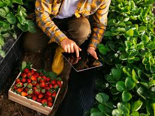

Agricultura orgânica
A agricultura orgânica, também conhecida como agricultura biológica, é um sistema sustentável de cultivo que proíbe o uso de produtos químicos sintéticos prejudiciais à saúde humana e ao meio ambiente, além de organismos geneticamente modificados. Os defensores desse método acreditam que ele resulta em alimentos de melhor qualidade, cultivados em solo saudável sem o uso de fertilizantes sintéticos e agrotóxicos não-orgânicos. Vários países, incluindo Estados Unidos, Japão, Suíça, Austrália, Brasil e países da União Europeia, têm programas para regular e promover a agricultura orgânica. Este sistema se baseia no uso de fertilizantes naturais, manejo do solo, rotação de culturas, aumento da biodiversidade, consorciação de culturas, adubação verde, compostagem e controle biológico de pragas e doenças, visando preservar a estrutura e a profundidade do solo sem recorrer a produtos químicos sintéticos.
Características
A produção orgânica visa alcançar o equilíbrio da natureza através de métodos naturais de adubação e controle de pragas. Esse conceito abrange não apenas a agricultura, mas também a pecuária e o processamento de alimentos, todos livres de produtos químicos artificiais. A filosofia orgânica rejeita completamente o uso de produtos químicos industriais. Além dos alimentos, há uma crescente demanda por produtos orgânicos não alimentares, como fibras de algodão. A certificação orgânica é concedida após um período de uso exclusivo de métodos orgânicos de produção. Vários países têm suas próprias organizações responsáveis pela certificação, seguindo regulamentações nacionais e da União Europeia.
Principios
- O solo é um organismo vivo, e deve ser tratado com o máximo de cuidado possível para manter toda a vida nele existente;
- Uso de adubos orgânicos de baixa solubilidade;
- Controle de insetos e doenças com medidas preventivas e produtos naturais;
- O mato (ervas daninhas) faz parte do sistema. Deve ser usado como cobertura de solo e abrigo de insetos.